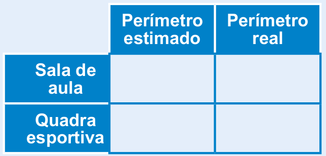
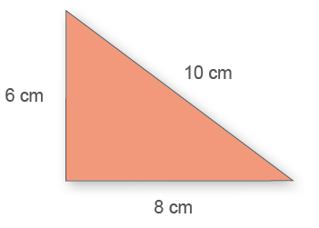
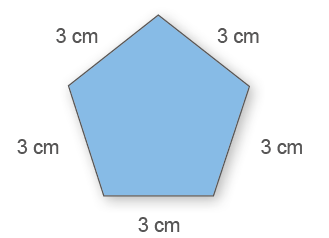
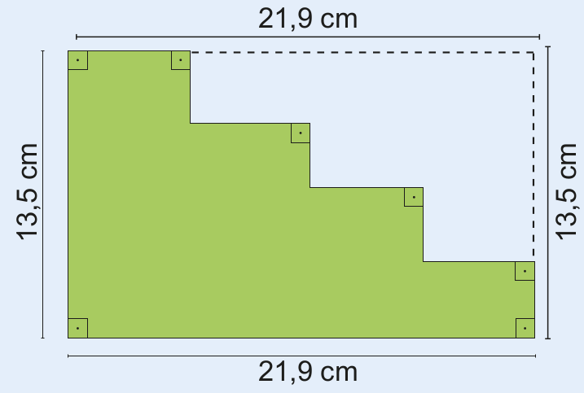
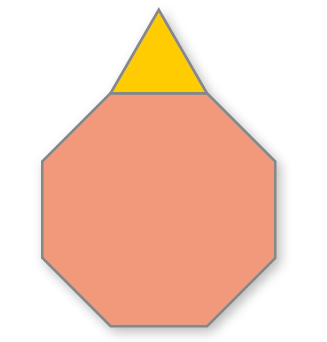
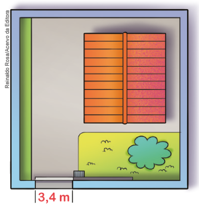

Introdução à unidade
Nesta unidade, apresentamos o conceito de perímetro e como medir uma superfície.
Também apresentamos o conceito de medida de tempo, temperatura, massa, volume e capacidade.
A seguir, relacionamos os objetivos que se pretende atingir ao estudar os conceitos desta unidade.
Capítulo 1 – Perímetro
Objetivos:
► Resolver situações-problema que envolvam o conceito de perímetro.
► Conceituar perímetro.
► Calcular o perímetro de figuras planas.
Capítulo 2 – Áreas
Objetivos:
► Resolver situações-problema que envolvam medida de superfície.
► Medir a superfície de uma região utilizando como unidade de medida a área de outra superfície.
► Reconhecer os símbolos utilizados para representar as unidades de medida de superfície, identificando o m² como unidade
► Realizar medições utilizando as unidades de medida de superfície.
► Transformar as unidades de medida de superfícies mais usuais.
Capítulo 3 – Áreas de alguns polígonos
Objetivos:
► Calcular a área de quadrados, retângulos, paralelogramos e triângulos.
Capítulo 4 - Medidas de tempo e temperatura
Objetivos:
► Identificar unidade de medida de tempo.
► Transformar unidades de medida de intervalo de tempo.
► Resolver situações‑problema envolvendo medidas de intervalo de tempo.
UNIDADE 7 - Grandezas e medidas

Reinaldo Rosa/Acervo da Editora
248
► Identificar a temperatura como grandeza.
► Comparar medidas de temperatura.
Capítulo 5 Medidas de massa
Objetivos:
► Identificar o grama como unidade fundamental de medida de massa.
► Reconhecer os múltiplos e submúltiplos do grama.
► Conhecer outras unidades de medida de massa, como tonelada, saca e arroba.
► Resolver situações-problema que envolvam medidas de massa.
Capítulo 6 - Volume
Objetivos:
► Identificar o m3 como unidade fundamental de medida de volume.
► Conhecer os múltiplos e submúltiplos do m3.
► Resolver situações-problema que envolvam medidas de volume.
Capítulo 7- Medidas de capacidade
Objetivos:
► Identificar o litro como unidade fundamental de medida de capacidade.
► Reconhecer os múltiplos e submúltiplos do litro.
► Relacionar as medidas de capacidade com as medidas de volume.
► Diferenciar situações que utilizam as medidas de volume das medidas de capacidade.
► Resolver situações-problema que envolvam medidas de capacidade.
Probabilidade e estatística - Probabilidades
Objetivos:
► Compreender o conceito de probabilidade.
► Compreender o conceito de eventos equiprováveis.
► Indicar probabilidades referentes a experimentos diversos.
Vende-se apartamento
71 m² de área privativa
Este apartamento apresenta: 3 dormitórios, sendo 1 suíte, uma sala com dois ambientes, cozinha, lavanderia e 1 banheiro. No edifício há área para o lazer, para a prática esportiva, entretenimento e contemplação. O espaço contemplação é um verdadeiro tributo à natureza sendo 10 000 m² de bosques. Cada apartamento tem direito a uma vaga de garagem.
![Ilustração de uma planta baixa de um apartamento. Ela é a representação desse espaço em projeção horizontal, como se você visse de cima os cômodos do imóvel. A planta do apartamento da esquerda para a direita tem um banheiro, que ocupa quase a totalidade da lateral esquerda da planta. Um pouco maior que o banheiro, uma sala de Tv e de jantar com um sofá para três pessoas e mais outro sofá para uma pessoa. À frente dos sofás, uma televisão de plasma. À direita da TV, a mesa de jantar com seis cadeiras. No centro, quarto com cama de solteiro e um banheiro. Mais à direita, um quarto com cama de casal com banheiro, metade do tamanho do quarto central. No canto direito, um outro quarto de solteiro.](../../resources/images/planta.png)
CONVERSE
1. Como vimos no texto, a superfície do apartamento possui uma medida. Como chamamos a medida de uma superfície? Área.
2. O que os valores 71 m² e 10 000 m² indicam? Indicam medida de área.
3. Como poderíamos saber o comprimento total do contorno do apartamento? Como chamamos essa medida? Adicionando as medidas de comprimento de todas as paredes externas do apartamento. Essa medida chama-se perímetro.
Orientações específicas
Por meio da planta do apartamento e do texto, são propostos alguns questionamentos para verificar se os alunos conhecem como se chama a medida de uma superfície e a medida do contorno desta superfície. É muito comum nas grandes cidades a entrega de panfletos contendo a apresentação de um novo imóvel que está sendo construído. Em alguns destes, são apresentadas as plantas dos imóveis. Esse é um recurso que pode ser utilizado em sala de aula para explorar o conceito de área e perímetro, para que os alunos percebam a conexão entre o que estão estudando com situações do cotidiano, já que essa situação está presente no seu dia a dia. Em grupos, eles podem explorar outras plantas que forem trazidas para a sala de aula.
Professor, é muito comum, no cotidiano encontrarmos panfletos de construtoras que apresentam esse tipo de planta. Verifique com os alunos se eles já viram outras plantas como a apresentada e em que situação.
249
Após a exploração da situação apresentada no início do capítulo, solicite aos alunos que, com o auxílio de uma trena ou metro de carpinteiro, meçam o perímetro da sala de aula e anotem as medidas encontradas no caderno. Eles poderão construir uma tabela e, inicialmente, estimar essa medida, fazendo a verificação posteriormente. Além da sala de aula, pode-se solicitar que calculem o perímetro de outros lugares da escola, por exemplo, de uma quadra esportiva.
Para exploração do conceito de perímetro, utilize também o geoplano. A seguir, apresentamos sugestão de atividade.
1. Construa, no geoplano, um quadrado cujo perímetro seja igual a 16 unidades de comprimento.
2. Construa, no geoplano, um quadrado e um retângulo que possuam o mesmo perímetro.
Ao construir polígonos no geoplano para o cálculo do perímetro, deve-se observar que em polígonos, como o triângulo e o paralelogramo, teremos uma unidade de medida que não corresponde à unidade de medida de comprimento horizontal e vertical. Teremos uma unidade de medida diferente que corresponde à diagonal que pode ser traçada entre dois pontos formados pelos vértices de um quadrado. Caso os alunos construam esses polígonos, questione-os sobre essa unidade de medida de comprimento nova que deverá ser utilizada.
CAPÍTULO 1 - Perímetro
Conceito de perímetro
Juliana adora costurar e está fazendo uma colcha de patchwork. Para fazer o acabamento da colcha, ela deverá costurar uma fita de cetim em toda a sua volta.

Reinaldo Rosa/Acervo da Editora

1. Quantos metros de fita lilás Juliana precisará para fazer o acabamento da colcha? Troque ideias com seu colega e expliquem como é possível fazer esse cálculo.
a) Sabendo que a colcha sem o acabamento tem 180 cm por 230 cm, quantos metros de fita serão necessários para fazer o acabamento? Para calcular quantos metros de fita serão necessários, basta que somemos as medidas do contorno da colcha.
250
Encontre soluções
Atividade 4
Em um retângulo, a medida dos lados opostos é igual. Logo, temos 2 lados que medem 12 cm. Como o perímetro é igual a 54 cm, temos:
54 - 12 - 12 = 30 cm. A soma das medidas dos outros 2 lados é igual a 30 cm. Para sabermos a medida de cada lado, temos: 30 : 2 = 15 cm.
A medida do outro lado do retângulo é igual a 15 cm.
Sabendo que a colcha tem 180 cm por 230 cm, quantos metros de fita serão necessários para fazer o acabamento da colcha? Para responder a essa questão, é necessário calcular o perímetro.
Portanto: 180 + 180 + 230 + 230 = 820 cm. Transformando esse valor em metros, temos 8,2 m.
Agora, observe como podemos calcular o perímetro (P) de alguns polígonos.
a)
P = 6 + 10 + 8 = 24 cm
b)
P = 5 ∙ 3 = 15 cm
ENCONTRE SOLUÇÕES
1. Em seu caderno, determine o perímetro dos polígonos a seguir.
a)

P = 6 + 6 + 4 + 4 = 20 cm
b)

P = 3 ∙ 3 = 9 cm
c)

P = 5 + 7 + 4,5 + 4,5 = 21 cm
d)

P = 2 ∙ 8 + 2 ∙ 5 + 8 ∙ 2 = 42 cm
2. O perímetro de um quadrado é igual a 30 cm. Qual é a medida do
lado desse quadrado?
30 : 4 = 7,5 cm
Cada lado mede 7,5 cm.
3. A medida do lado de um hexágono regular é igual a 6 cm. Qual é o
perímetro desse hexágono, sabendo que ele apresenta todos os lados
com a mesma medida?
P = 6 ∙ 6 = 36 cm
Seu perímetro é igual a 36 cm.
4. O perímetro de um retângulo é igual a 54 cm. Sabendo-se que um dos lados mede 12 cm, determine a medida do outro lado. 15 cm
251
Atividade 5
Aproveite a atividade e veri- fique se os alunos percebem que quanto mais recortado for o polí- gono, maior será o seu períme- tro. Você pode propor aos alu- nos neste momento que, usando uma malha quadriculada, cons- truam polígonos com formas diferentes, mas que tenham o mesmo perímetro.
A → P = 12 ∙ 0,5 = 6 cm;
B → P = 8 ∙ 0,5 = 4 cm;
C → P = 14 ∙ 0,5 = 7 cm;
D → P = 20 ∙ 0,5 = 10 cm;
E → P = 12 ∙ 0,5 cm = 6 cm.
Atividade 7
Observe se os alunos per- cebem que para calcular o pe- rímetro é possível transferir as medidas apresentadas para os segmentos paralelos. Neste caso, o perímetro não se altera, quando pensamos em um retân- gulo. O que se altera é a área, observe:
5. Na malha quadriculada a seguir, temos alguns polígonos representados. Em seu caderno, determine o perímetro de cada um deles, sabendo que a medida do lado de cada quadradinho da malha é igual a 0,5 cm.
![Na malha quadriculada, cinco polígonos representados pelas cores A, B, C, D, E. A letra A é um retângulo azul. Ele ocupa quatro quadrados em cima e mais quatro embaixo. A letra B é um quadrado. Ele ocupa dois quadrados em cima e mais dois embaixo. A letra C é laranja, ela ocupa na malha quadrada o espaço de três linhas e quatro colunas. Na linha 1, em laranja os dois quadrados centrais. Na linha 2, em laranja todos os quadrados. Na linha 3, os dois quadrados centrais. A letra D, na cor verde, ocupa uma malha quadrada de 3 linhas e cinco colunas. Na linha 1, em verde a segunda e a quarta coluna. Na linha 2, em verde a linha inteira. Na linha 3, a segunda e a quarta coluna. Na letra D, em marrom, quatro quadrados em cima e dois centrais embaixo.](../../resources/images/254.PNG)
a) Qual dos polígonos apresenta o maior perímetro?
b) Quais são os polígonos que apresentam o mesmo perímetro?
6. A seguir, temos um triângulo equilátero cujo perímetro é igual a 12 cm. Determine o perímetro do octógono regular.
7. Determine o perímetro do polígono abaixo.

8. Leia o texto a seguir.
Começa nesta terça-feira costura dos rolos de grama sintética no Maracanã
[…]
O gramado híbrido entre grama natural e sintética é um modelo que vem sendo muito bem visto no futebol. O maior exemplo disso é Itaquera. A Arena do Corinthians usa este formato e é sempre elogiada pela ótima qualidade do campo, considerado pelos jogadores e treinadores como o melhor do Brasil.
[…]
► Sabendo-se que o campo é retangular e suas dimensões são 105 m por 68 m, determine o seu perímetro.
9. Um terreno quadrado tem um muro medindo 116,6 m de comprimento e um portão eletrônico medindo 3,4 metros.
a) Qual é o perímetro desse terreno?
b) Quanto mede o lado desse terreno?
10. Um retângulo e um quadrado têm perímetros iguais. Sabendo que os lados do retângulo medem 7 cm e 4 cm, determine a medida do lado do quadrado.
252
Atividade 11
Para calcularmos a distância percorrida por Márcio, primeiramente precisamos fazer a transformação de unidade. Para o cálculo, podemos ter as medidas em km ou m. Nesse caso, transformamos em metros para realizar o cálculo com números inteiros. Porém, também poderíamos realizar utilizando números decimais.
P = 4 ∙ (2 ∙ 600 + 2 ∙ 300) =
= 4 ∙ (1 200 + 600) = 4 ∙ 1 800 = 7 200 m
Como o resultado obtido está em metros, vamos agora transformá-lo em km, conforme é solicitado no enunciado.
7 200 m correspondem a 7, 2 km.
Márcio corre 7,2 km em um dia.
Atividade 12
Note que os lados cujas medidas são desconhecidas medem 20 metros cada um. Logo, o perímetro será igual a 80 + 80 + 60 + 60 = 280 metros.
Daniela terá que comprar 280 metros.
Atividade 13
A medida do lado desconhecido é igual a maior medida do lado do retângulo, menos a medida do lado do quadrado, menos a menor medida do lado do retângulo.
45 - 20 - 10 = 15 cm
Logo, a medida do contorno corresponde ao perímetro da figura.
P = 4 ∙ 45 + 4 ∙ 10 + 4 ∙ 15 =
= 180 + 40 + 60 = 280 cm
11. Márcio adora praticar esportes. Ele corre dois dias por semana em uma praça perto de sua casa. Ele sempre dá 4 voltas completas na pista de corrida. Quantos quilômetros, aproximadamente, ele costuma correr em um dia?

Reinaldo Rosa/Acervo da Editora

12. (OBMEP) Daniela quer cercar o terreno representado pela figura. Nessa figura, dois lados consecutivos são sempre perpendiculares e as medidas de alguns lados estão indicadas em metros. Quantos metros de cerca Daniela terá que comprar?

a) 180 cm
d) 280 cm
b) 200 cm
e) 300 cm
c) 220 cm
13. (OBMEP) Juntando, sem sobreposição, quatro ladrilhos retangulares de 10 cm por 45 cm e um ladrilho quadrado de lado 20 cm, Rodrigo montou a figura ao lado. Com uma caneta vermelha ele traçou o contorno da figura. Qual é o comprimento desse contorno?
a) 180 cm
b) 200 cm
c) 220 cm
d) 280 cm
e) 300 cm
253